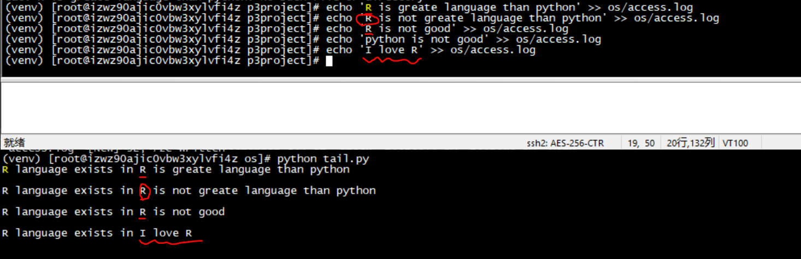

数据结构¶
1. 变量和类型¶
变量是一种存储数据的载体。计算机中的变量是实际存在的数据或者说是存储器中存储数据的一块内存空间，变量的值可以被读取和修改，这是所有计算和控制的基础。计算机能处理的数据有很多种类型，除了数值之外还可以处理文本、图形、音频、视频等各种各样的数据，那么不同的数据就需要定义不同的存储类型。Python中的数据类型很多，而且也允许我们自定义新的数据类型，如下为我们常用的Python数据类型
整形
浮点型
字符串型
布尔型
复数型
2. 变量命名¶
Python需要使用**合法**标识符给变量命名，标识符就是用于给程序中变量、类、方法命名的符号
Python 保留字
小技巧
如下为Python保留字，不能用于变量、函数等对象名字。
关键字列表随时查
#导入keyword 模块
import keyword
#显示所有关键字
print(type(keyword.kwlist))
# 返回list
keyword.kwlist
['False', 'None', 'True', 'and', 'as', 'assert', 'break', 'class', 'continue', 'def', 'del', 'elif', 'else', 'except', 'finally', 'for', 'from', 'global', 'if', 'import', 'in', 'is', 'lambda', 'nonlocal', 'not', 'or', 'pass', 'raise', 'return', 'try', 'while', 'with', 'yield']
对命名规范的PEP 8要求与硬性规则
PEP 8:
用小写字母拼写，多个单词用下划线连接
受保护的实例属性用单个下划线开头
私有的实例属性用两个下划线开头
硬性规则:
变量名由字母（广义的Unicode字符，不包括特殊字符）、数字和下划线构成，数字不能开头
大小写敏感
与关键字（有特殊含义的单词）和系统保留字（如函数、模块等的名字）不冲突
3. 变量使用¶
变量使用样例
a = 88
b = 8
print(a+b)
print(a / b)
print(a // b)
print(a % b)
print(a ** b)
# 使用type检查变量的类型
print(type(a)) # <class 'int'>
print('{0} + {1} 等于 {2}'.format(a, b, a + b)) # 88 + 8 等于 96
变量转换
使用Python中内置的函数对变量类型进行转换
int()：将一个数值或字符串转换成整数
float()：将一个字符串转换成浮点数
str()：将指定的对象转换成字符串形式，可以指定编码，如gbk, utf-8
chr()：将整数转换成该编码对应的字符串（一个字符）
ord()：将字符串（一个字符）转换成对应的编码（整数）
4. 运算符¶
Python支持多种运算符（如：加减乘除等），下表大致按照优先级从高到低的顺序列出了所有的运算符
运算符
描述
[] [:]
下标，切片
**
指数
~ + -
按位取反, 正负号
+ - * / % //
加，减，乘，除，模，整除
>> <<
右移，左移
& ^ |
按位与, 按位异或，按位或
<= < > >= == !=
小于等于，小于，大于，大于等于，等于，不等于
is is not
身份运算符
in not in
成员运算符
not or and
逻辑运算符
说明： 在实际开发中，如果搞不清楚运算符的优先级，可以使用括号来确保运算的执行顺序。
5. 字符串与常用数据结构¶
- 1. 字符串Strings
是由零个或多个字符组成的有限序列
在Python程序中，如果我们把单个或多个字符用单引号或者双引号包围起来，就可以表示一个字符串
- 2. 列表Lists
是任意对象（包括任意种类的Python对象，如列表）组成的序列，把值放入方括号[]就可以创建列表
列表使用从0开始的整数索引
新项追加到列表末尾: <list_name>.append()
将一项插入到列表: <list_name>.insert(位置索引,数字/字符)
列表推导表达式：list_name = [i for i in range(18) if i %% 3 == 0]
- 3. 元组Tuples
圆括号()中放入一组值即可创建元组
元组支持的大部分操作与列表相同，但元组创建后**不能修改/删除/添加**新元素
元组是不可变的
- 4. 集合Sets
集合是由不重复元素组成的无序的集
基本用法：消除重复值
标准操作支持：并集 | 、交集 & 、差集 - 和对称差集 ^
添加删除操作：add()、update()、remove()
集合支持推导式形式
a = 88
a = {x for x in 'abraceaddabra' if x not in 'abc'}
print (a) # 输出结果 {'r', 'd', 'e'}
5. 字典
字典是一个关联数组或散列表，其中包含键Key索引的对象
关键字可以是任意不可变对象，通常是数字/字符串，如果一个元组只包含数字/字符串/元组，则这个元组也可以做关键字
创建字典：在大括号 {} 中放入值
删除字典元素： del <dic_name>[“Key”]
字典排序：sorted(<dict_name>)
检测字典中是否存在特定键，使用in 或 not in
字典可以通过list(dic_name)将字典转换成列表
dict() 构造函数可以直接从键值对序列里创建字典
# 字典循环，同时取出关键字与对应值
phone = {'zhangsan': 82668888, 'wangwu': 95595}
for k,v in phone.items():
print(k,v)
# 输出
# zhangsan 82668888
# wangwu 95595
# 序列循环,enumerate() 函数可以将索引位置和其对应的值
for i, v in enumerate(['wangwu', 'zhangsan', 'haha']):
print(i,v)
# 输出
# 0 wangwu
# 1 zhangsan
# 2 haha
# 当同时在两个或更多序列/lists中循环时，可以用 zip() 函数将其内元素匹配
question = ['why','how much']
answer = ['because ah', '5$']
for q, a in zip(question, answer):
print(q, a)
# 输出
# why because ah
# how much 5$
# 逆序对序列/list排序
for i in reversed(q):
print(i)
# 输出
# how much
# why
- 6. 生成器
任何使用yield的函数都成为生成器
生成器是一个函数，生成一个值的序列
是编写基于处理管道、流、数据流程序的极其强大的方式（例: 类似Unix/Linux的tail -f命令的行为）
经常与其他可迭代对象（列表或文件）混合使用
递归不能用在生成器函数中
# 模拟Linux/Unix的tail -f命令行为
# 定义一个tail 与grep 函数
import time
def tail(f):
f.seek(0,2) # 跳到文件的EOF最后
while True:
line = f.readline() # 尝试读取一个新的文本行
if not line: # 如果没内容，暂时休眠并再次尝试
time.sleep(0.1)
continue
yield line
def grep(lines, search_text):
for line in lines:
if search_text in line:
yield line
wwwlog = tail(open("access.log"))
rlines = grep(wwwlog, "R")
for line in rlines:
print('R language exists in {}'.format(line))
执行 python tail.py | 在另一个Linux命令行窗口执行：echo ‘Python is not better than R language’ >> access.log 执行参考下图：
{kind=link}
- 7. 协程
- 函数可以编写成一个*任务程序*，用来处理发送给他的一系列输入，这类函数被称为*协程*
在函数内yield语句可以作为表达式使用（出现在赋值运算符的右边），以这种方式使用yield语句的函数称为协程
协程是通过将yield语句作为表达式（yield）的形式创建的
使用send()为协程发送某个值之前，协程会暂止
发送值之后，协程中的(yield)表达式将返回这个值，而接下来的语句会处理它，处理直到遇到下一个(yield)表达式才会结束
整个过程会持续进行，直到协程函数返回或调用它的close()方法为止
基于Producer-Consumer 生产者-消费者模型编写并发程序时，必用协程
会不断地执行下去，除非被显式关闭或者自己退出
在解决系统、网络和分布式计算的某些编程问题时，生成器和协程特别有用
递归不能用在协程函数中
import time
def consumer():
r = ''
while True:
n = yield r
if not n:
return
print('[CONSUMER] Consuming %s...' % n)
time.sleep(1)
r = 'I am OK'
def producer(c):
next(c) # 启动生成器
n = 0
while n < 5:
n = n + 1
print('[PRODUCER] Producing %s...' % n)
r = c.send(n) # 切换到consumer()执行
print('[PRODUCER] Consumer return: %s' % r)
c.close()
if __name__=='__main__':
c = consumer()
producer(c)
# 输出结果
#[PRODUCER] Producing 1...
#[CONSUMER] Consuming 1...
#[PRODUCER] Consumer return: I am OK
#[PRODUCER] Producing 2...
#[CONSUMER] Consuming 2...
#[PRODUCER] Consumer return: I am OK
#[PRODUCER] Producing 3...
#[CONSUMER] Consuming 3...
#[PRODUCER] Consumer return: I am OK
#[PRODUCER] Producing 4...
#[CONSUMER] Consuming 4...
#[PRODUCER] Consumer return: I am OK
#[PRODUCER] Producing 5...
#[CONSUMER] Consuming 5...
#[PRODUCER] Consumer return: I am OK
- 说明：
首先调用next(c)启动生成器，一开始调用next()必不可少，非常容易被忽略。
通过通过c.send(n)切换到consumer执行
consumer通过yield拿到消息，处理，又通过yield把结果传回
producer拿到consumer处理的结果，继续生产下一条消息
达到限制条件后，producer决定不生产了，通过c.close()关闭consumer，整个过程结束。
- 参考：
Python 数据结构，Data_Structures